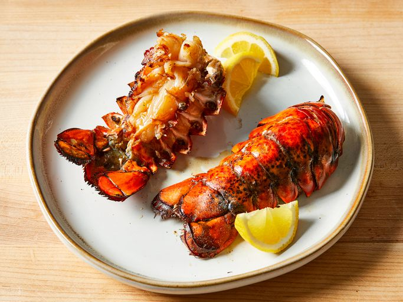

Grilled Rock Lobster Tails

Description
Grilled Rock Lobster Tails is a delicious seafood dish that showcases the rich and succulent flavor of lobster,
enhanced by the smoky notes from grilling.
This Grilled Rock Lobster Tails recipe is a simple and elegant
way to enjoy the natural flavors of lobster with the added smokiness from the grill.
Ingredients
- 1 tablespoon lemon juice
- ½ cup olive oil
- 1 teaspoon salt
- 1 teaspoon paprika
- ⅛ teaspoon white pepper
- ⅛ teaspoon garlic powder
- 2 (10 ounce) rock lobster tails
Steps
- Gather all ingredients.
- Preheat the grill for high heat and lightly oil the grate.
- Pour lemon juice into a small bowl; slowly whisk in olive oil. Whisk in salt, paprika, white pepper,
and garlic powder until combined.
- Split lobster tails lengthwise with a large knife, then brush flesh with some marinade.
- Place lobster tails flesh-side down on the preheated grill and cook, turning once and basting frequently
with marinade, until opaque and firm to the touch, 10 to 12 minutes. Discard any remaining marinade.